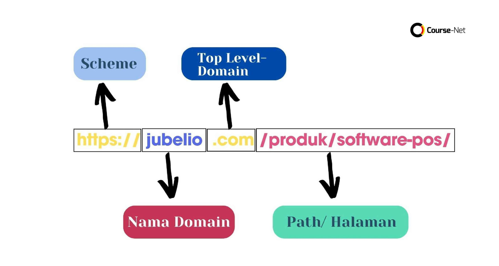

DomainDomain adalah nama unik yang digunakan sebagai alamat situs web di internet, seperti "google.com", yang menggantikan alamat IP numerik yang sulit diingat. Fungsinya adalah untuk memudahkan pengguna mengakses situs web, menyediakan identitas dan branding bisnis secara online, serta membantu menjaga konsistensi akses meskipun alamat IP server berubah,nama unik yang digunakan untuk mengidentifikasi alamat sebuah situs web di internet. Misalnya, www.google.com adalah domain untuk situs Google.
Fungsi domain- Fungsi utama domain Alamat yang mudah diingat : Domain berfungsi sebagai alamat yang mudah diingat manusia, seperti nama kontak di telepon, sehingga pengguna tidak perlu menghafal deretan angka (alamat IP) yang panjang. - Branding dan identitas : Nama domain yang dipilih dapat mencerminkan identitas atau merek sebuah bisnis atau organisasi di internet, yang sangat penting untuk strategi branding. - Stabilitas alamat : Domain memberikan alamat yang stabil. Jika alamat IP server berubah, domain tetap sama, sehingga pengguna tidak akan kehilangan akses ke situs web tersebut. - Jalur komunikasi : Domain berfungsi sebagai jalur komunikasi yang memudahkan pengguna mengakses konten di suatu situs web yaitu untuk mempermudah pengguna dalam mengakses situs tanpa harus mengingat alamat IP server yang rumit. Domain juga berfungsi sebagai identitas online bagi pemilik website. ontoh - Nama domain : google.com - Nama domain utama (Second-Level Domain) : google - Ekstensi domain (Top-Level Domain) : .com Catatan - Ada juga jenis domain lain, seperti subdomain (misalnya, www. pada www.google.com), Domain Tingkat Atas Kode Negara (CCTLD) seperti .id untuk Indonesia, dan Domain Tingkat Atas Umum (gTLD) seperti .org atau .net. - Untuk memiliki nama domain, Anda perlu mendaftarkannya melalui lembaga yang bertanggung jawab seperti ICANN atau PANDI. - Perlu dicatat bahwa "domain" juga memiliki arti lain dalam konteks matematika, yaitu himpunan semua nilai masukan yang memungkinkan untuk suatu fungsi
.